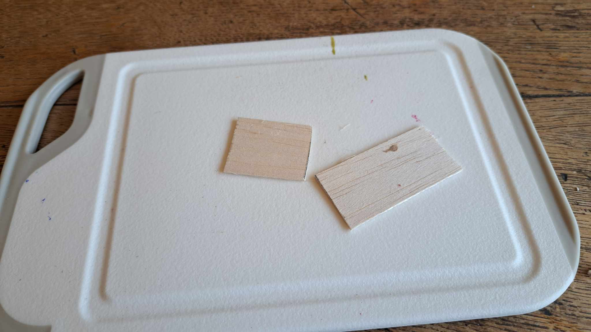
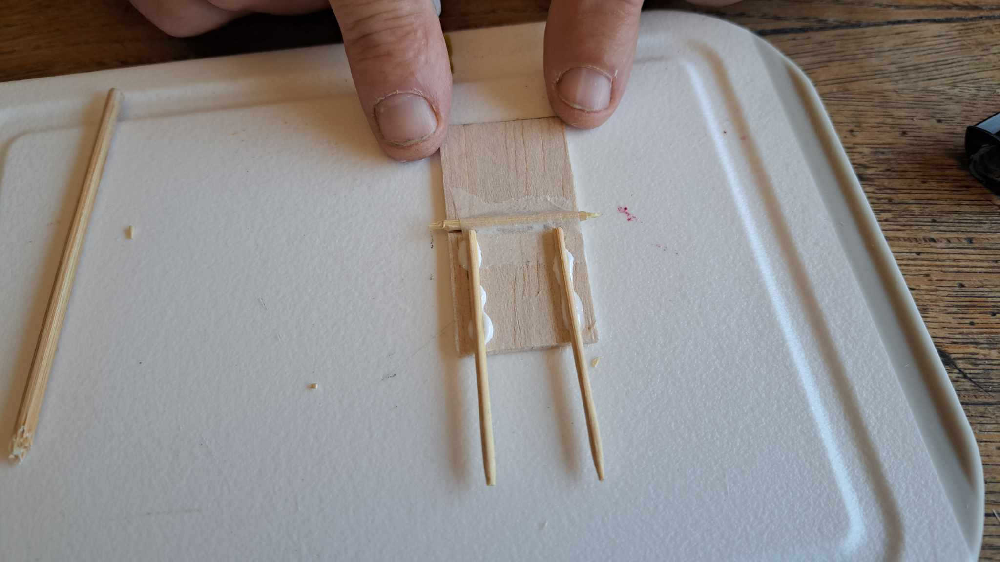
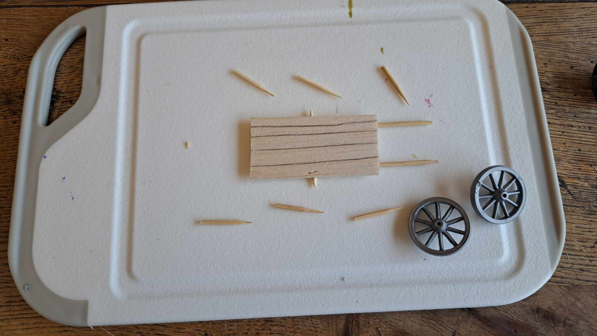
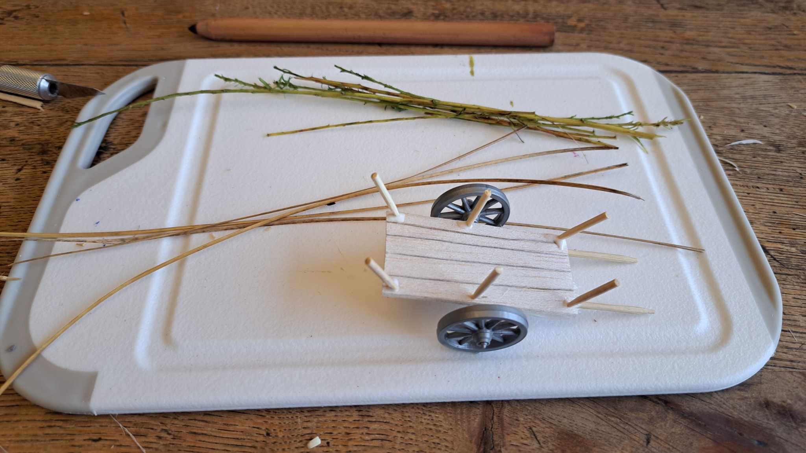
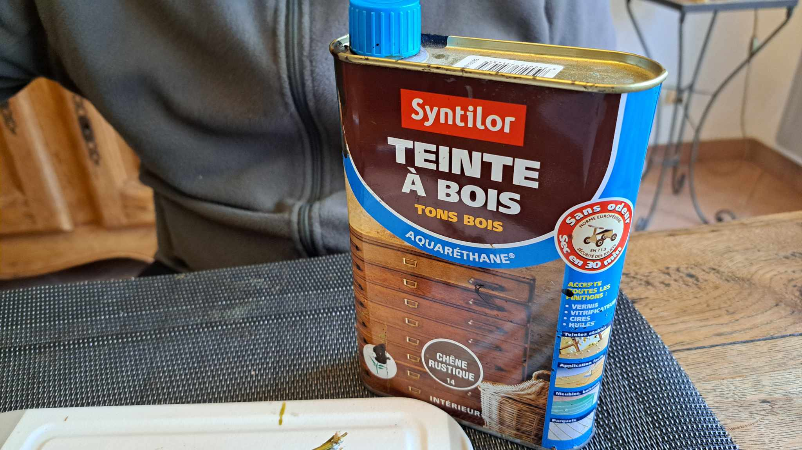
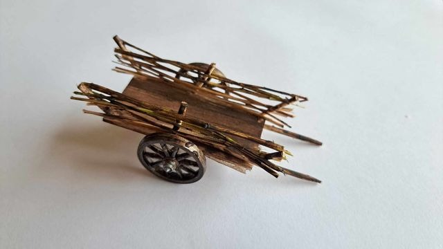

Charrette médiévale
Outils et Matériel
- Balsa (bois léger et cassant)
- Brindilles de bois ou brins de balais
- 2 Roues de récupération (d'un jouet en plastique)
- Cure dents
- Colle à bois
- Peinture acrylique
- Teinture à bois
- Cutter
- Crayon noir
Étapes du Tutoriel
Étape 1 : Préparation du support
Coupez une planche de Balsa à dimensions. Pour ma part, le support fera 5.5 x 3cm.

Avec un crayon noir, je fais des traits pour matérialiser les planches du support
Étape 2 : L'essieu
Remarque : Mon essieu n'est pas fonctionnel, il ne tourne pas.
Je commence par couper un cure dents à 4cm de longueur et je taille le bout coupé afin d'avoir deux extrémités pointues.
Je le colle au milieu de mon support avec de la colle à bois.
Je vérifie si la longeur est bonne en plaçant les roues temporairement.
Étape 3 : Les Bras de la charrette
Je coupe une extrémité de deux cure-dents. Pour ma part, la longueur est de 5cm une fois coupé. Je les colle à 3mm du bord du support.
Étape 4 : Les montants
Je coupe 6 cure-dents à 2mm en gardant un côté pointu. Je fais 6 pré-trous dans le support de ma charrette pour faciliter le placement des montants.

Je place les cure-dents. Celui du milieu est droit et j'incline ceux aux extrémités. Je consolide le tout avec un point de colle à bois.
Étape 5 : Les traverses
Pour réaliser les traverses, j'utilise soit des brindilles de bois, soit des brins de balais. Je les coupe à 7.5cm

Je les "tresse" entre les montants afin de les maintenir en place. Une fois placées, je fixe le tout avec un point de colle à bois sur chaque montant.
Étape 5 : Peinture
Pour la structure de la charrette, tout est teinté avec une teinture à bois

Les roues sont quant-à-elles peintes avec de la peinture acrylique. Vous pouvez aussi ajouter un cerclage avec une bande de papier noir autour de la roue.
Étape 5 : Assemblage
Il ne reste plus qu'à assembler les roues avec le reste de la charrette. Les roues peuvent être fixées avec un point de colle les liant à l'essieu. La charrette est alors terminée.
